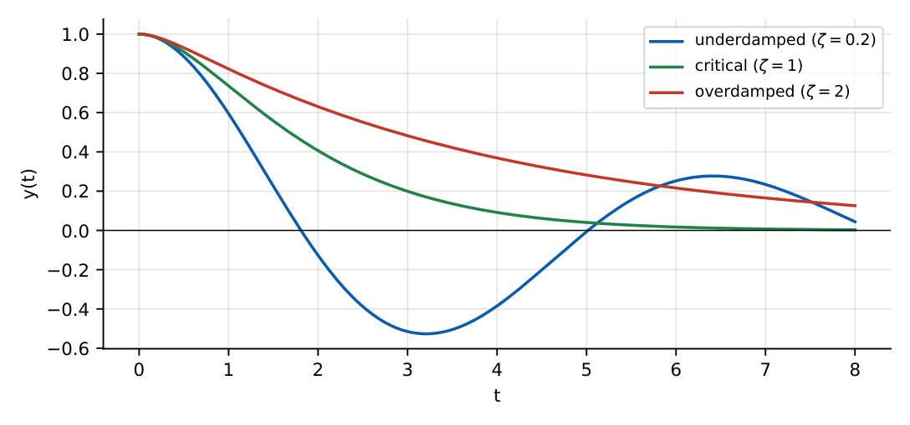

Differential Equations
In this chapter
Separable and linear first-order equations, characteristic-equation solutions of constant-coefficient ODEs, complementary function plus particular integral, Euler–Cauchy equations, initial and boundary value problems, Laplace-transform solutions and separation of variables for PDEs.
3.1 First-order differential equations
Separable: \(\frac{dy}{dx}=f(x)g(y)\Rightarrow\int\frac{dy}{g(y)}=\int f(x)dx\).
Linear: \(y'+P(x)y=Q(x)\). Integrating factor \(\mu=e^{\int P\,dx}\); then \((\mu y)'=\mu Q\) and \(y=\frac1\mu\int\mu Q\,dx\).
Exact: \(M\,dx+N\,dy=0\) with \(\partial M/\partial y=\partial N/\partial x\); solution \(\int M\,dx+\int(\text{terms of }N\text{ free of }x)\,dy=c\).
Homogeneous (\(M,N\) of the same degree): put \(y=vx\). Bernoulli: \(y'+Py=Qy^n\); put \(v=y^{1-n}\).
\(y'+\frac2xy=x\): \(\mu=e^{2\ln x}=x^2\), so \((x^2y)'=x^3\Rightarrow y=\frac{x^2}4+\frac c{x^2}\).
3.2 Higher-order linear equations: CF and PI
The general solution of \(L[y]=f(x)\) is \(y=y_c+y_p\): the complementary function (solution of the homogeneous equation) plus a particular integral.
Auxiliary equation \(am^2+bm+c=0\).
Distinct real roots \(m_1,m_2\): \(y_c=C_1e^{m_1x}+C_2e^{m_2x}\).
Repeated root \(m\): \(y_c=(C_1+C_2x)e^{mx}\).
Complex roots \(\alpha\pm j\beta\): \(y_c=e^{\alpha x}(C_1\cos\beta x+C_2\sin\beta x)\).

\(f=e^{ax}\): \(y_p=\frac{e^{ax}}{\phi(a)}\) if \(\phi(a)\ne0\); otherwise multiply by \(x\) (resonance): \(y_p=x\frac{e^{ax}}{\phi'(a)}\), and for a double root \(y_p=\frac{x^2e^{ax}}{\phi''(a)}\).
\(f=\sin(ax+b)\) or \(\cos(ax+b)\): replace \(D^2\to-a^2\); if \(\phi(-a^2)=0\) multiply by \(x\).
\(f=x^n\): expand \(\frac1{\phi(D)}=(1+\cdots)^{-1}\) as a series in \(D\).
Undetermined coefficients: trial form chosen from \(f\), multiplied by \(x^s\) if it overlaps \(y_c\).
3.3 Variation of parameters
For \(y''+Py'+Qy=R\) with homogeneous solutions \(y_1,y_2\) and Wronskian \(W=y_1y_2'-y_1'y_2\): \[ y_p=-y_1\int\frac{y_2R}{W}dx+y_2\int\frac{y_1R}{W}dx. \] It works for any \(R(x)\) (for example \(\sec x\), \(\tan x\)), where undetermined coefficients fails.
3.4 Euler–Cauchy equation
\(x^2y''+axy'+by=0\). Substitute \(y=x^m\): \(m(m-1)+am+b=0\). Real distinct roots give \(y=C_1x^{m_1}+C_2x^{m_2}\); repeated root \(y=(C_1+C_2\ln x)x^m\); complex \(\alpha\pm j\beta\): \(y=x^\alpha[C_1\cos(\beta\ln x)+C_2\sin(\beta\ln x)]\). Equivalent substitution \(x=e^t\) turns it into a constant-coefficient equation.
3.5 Initial and boundary value problems
An initial-value problem specifies \(y,y'\) at one point and (for linear equations with continuous coefficients) has a unique solution. A boundary-value problem specifies conditions at two points and may have none, one or infinitely many solutions.
\(y''+\lambda y=0\), \(y(0)=y(L)=0\): non-trivial solutions only for \(\lambda_n=(n\pi/L)^2\), \(y_n=\sin(n\pi x/L)\), \(n=1,2,\dots\) This is the origin of Fourier series in separation of variables.
3.6 Laplace-transform solutions of ODEs
\(\mathcal L\{y'\}=sY-y(0)\), \(\ \mathcal L\{y''\}=s^2Y-sy(0)-y'(0)\).
\(\mathcal L\{1\}=\frac1s\), \(\ \mathcal L\{t^n\}=\frac{n!}{s^{n+1}}\), \(\ \mathcal L\{e^{at}\}=\frac1{s-a}\), \(\ \mathcal L\{\sin\omega t\}=\frac\omega{s^2+\omega^2}\), \(\ \mathcal L\{\cos\omega t\}=\frac s{s^2+\omega^2}\).
Shift: \(\mathcal L\{e^{at}f\}=F(s-a)\); \(\mathcal L\{tf\}=-F'(s)\); \(\mathcal L\{\delta(t)\}=1\).
Procedure: transform the ODE, solve algebraically for \(Y(s)\) with initial conditions already included, expand in partial fractions and invert.
\(y'+2y=0\), \(y(0)=3\): \(sY-3+2Y=0\Rightarrow Y=\frac3{s+2}\Rightarrow y=3e^{-2t}\). For \(y''-3y'+2y=0\), \(y(0)=0\), \(y'(0)=1\): \(Y=\frac1{(s-1)(s-2)}=\frac1{s-2}-\frac1{s-1}\), \(y=e^{2t}-e^t\).
3.7 Partial differential equations: variable separation
Heat: \(u_t=c^2u_{xx}\). Wave: \(u_{tt}=c^2u_{xx}\). Laplace: \(u_{xx}+u_{yy}=0\) (elliptic).
Assume \(u=X(x)T(t)\): \(X''/X=T'/(c^2T)=-\lambda\). Boundary conditions on \(X\) fix \(\lambda_n=(n\pi/L)^2\) and the general solution is a superposition \(\sum b_n\sin\frac{n\pi x}Le^{-c^2\lambda_nt}\) (heat) or with \(\cos(c\sqrt{\lambda_n}t)\) and \(\sin(c\sqrt{\lambda_n}t)\) (wave). Coefficients come from the initial condition via Fourier series.
Classification of \(Au_{xx}+Bu_{xy}+Cu_{yy}=0\): \(B^2-4AC<0\) elliptic, \(=0\) parabolic, \(>0\) hyperbolic.
(i) The linear-ODE integrating factor is \(e^{\int P}\), not \(\int P\). (ii) Forgetting resonance: if \(e^{ax}\) is already in \(y_c\) the PI needs a factor \(x\). (iii) In Laplace solutions never forget the initial-condition terms. (iv) A BVP is not guaranteed to have a solution. (v) \(y_p\) for \(\phi(D)y=\sin\) uses \(D^2\to-a^2\) only, not \(D\to-a\).
First identify the type, since separable and linear-with-\(\mu\) cover most first-order questions. For \(y''+a^2y=\sin ax\) expect \(x\cos ax\) in \(y_p\). For stability questions the sign of the real parts of the auxiliary roots decides the behaviour as \(x\to\infty\). For Euler–Cauchy go straight to the indicial equation.
3.8 GATE problems
Q1. The solution of \(y'=y\), \(y(0)=2\) at \(x=1\) is (A) \(2\) (B) \(2e\) (C) \(e^2\) (D) \(e\).
Q2. The general solution of \(y''+4y=0\) is (A) \(C_1e^{2x}+C_2e^{-2x}\) (B) \(C_1\cos2x+C_2\sin2x\) (C) \((C_1+C_2x)e^{2x}\) (D) \(C_1\cos4x+C_2\sin4x\).
Q3. The integrating factor of \(y'+\frac2xy=x\) is (A) \(x\) (B) \(x^2\) (C) \(e^x\) (D) \(\ln x\).
Q4. Laplace transform of \(\sin3t\) is (A) \(\frac3{s^2+9}\) (B) \(\frac s{s^2+9}\) (C) \(\frac1{s^2+9}\) (D) \(\frac3{s^2-9}\).
Answers: Q1 (B). Q2 (B). Q3 (B). Q4 (A).
Q5. \(y''-3y'+2y=0\), \(y(0)=0\), \(y'(0)=1\). Then \(y(1)=\) (A) \(e^2-e\) (B) \(e-e^2\) (C) \(e^2+e\) (D) \(2e\).
Q6. A particular integral of \(y''-y=e^{2x}\) is (A) \(e^{2x}/3\) (B) \(e^{2x}/5\) (C) \(xe^{2x}/3\) (D) \(e^{2x}\).
Q7. A particular integral of \(y''+2y'+y=e^{-x}\) is (A) \(e^{-x}\) (B) \(xe^{-x}\) (C) \(\frac12x^2e^{-x}\) (D) \(\frac12e^{-x}\).
Answers: Q5 (A): roots \(1,2\); \(y=e^{2x}-e^x\). Q6 (A): \(\phi(2)=4-1=3\). Q7 (C): double root \(-1\), \(\phi''=2\).
Q8. \(y'=2xy\), \(y(0)=1\). Then \(y(1)=e^{k}\) with \(k=\) .
Q9. \(y'+2y=0\), \(y(0)=3\) (solve by Laplace). \(y(0.5)=\) (two decimals).
Q10. \(x^2y''+xy'-4y=0\), \(y(1)=2\), \(y'(1)=4\). Then \(y(2)=\) .
Answers: Q8: \(y=e^{x^2}\), \(k=1\). Q9: \(3e^{-1}=1.10\). Q10: \(m^2=4\), \(y=Ax^2+Bx^{-2}\); \(A+B=2\), \(2A-2B=4\Rightarrow A=2,B=0\); \(y(2)=8\).
Q11. Which are linear ODEs? (A) \(y'+xy=0\) (B) \(yy'=x\) (C) \(y''+(\sin x)y=0\) (D) \(y''+y^2=0\).
Answers: Q11: (A), (C).
T1. Nature of roots for critical damping of \(y''+by'+y=0\)? T2. Eigenvalues of \(y''+\lambda y=0\), \(y(0)=y(\pi)=0\)? T3. Type of \(u_{xx}+u_{yy}=0\)?
Answers: T1: repeated real root, \(b=2\). T2: \(\lambda=n^2\). T3: elliptic.
- Linear: \(\mu=e^{\int P}\); separable: integrate both sides; Bernoulli: \(v=y^{1-n}\).
- Aux. roots decide CF: real, repeated (\(x\) factor), complex (\(e^{\alpha x}\cos/\sin\)).
- PI: \(e^{ax}/\phi(a)\), resonance adds \(x\); \(\sin/\cos\): \(D^2\to-a^2\).
- Euler–Cauchy: \(y=x^m\) indicial equation; Laplace: \(sY-y(0)\), \(s^2Y-sy(0)-y'(0)\).
- PDE: \(X(x)T(t)\) separation, eigenvalues \((n\pi/L)^2\); \(B^2-4AC\) classification.